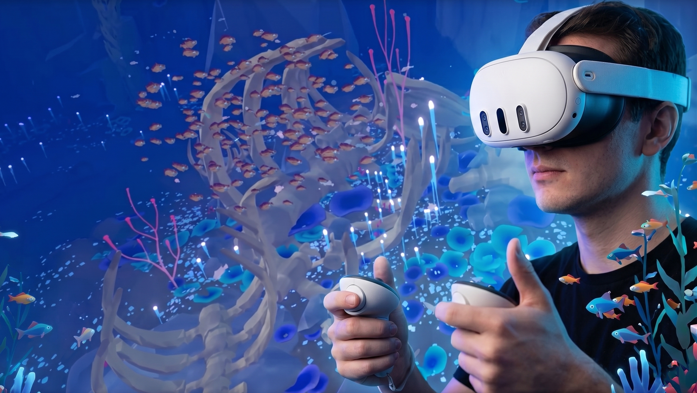
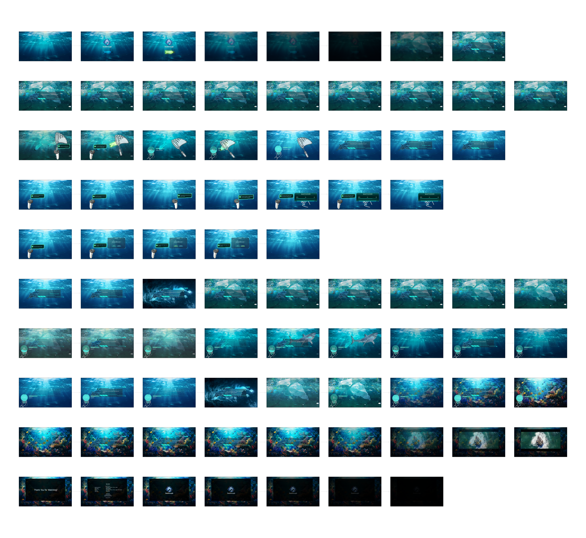
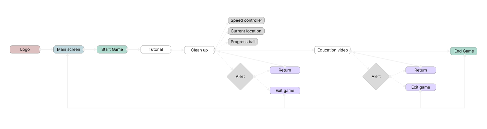
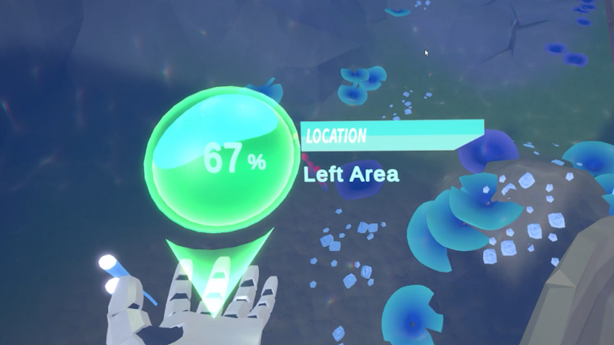
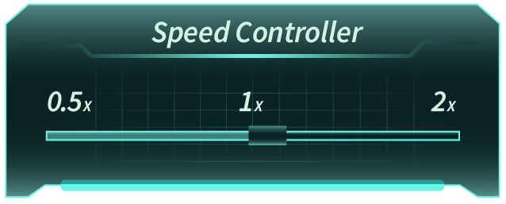
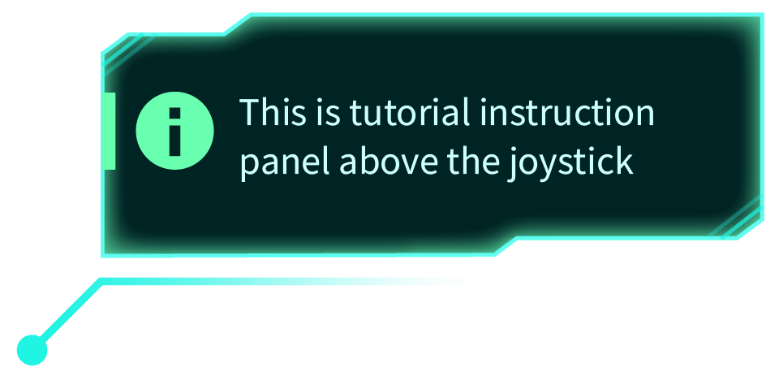

SeaThrough
An immersive VR experience that turns dry "reduce plastic" facts into an empathy-driven dive — engineered around motion-sickness comfort, a wrist-worn progress orb, and zero-onboarding spatial interaction. 一款沉浸式 VR 教育體驗，把硬性的減塑知識，轉化為具情感同理心的體感潛水，以抗暈眩、手腕進度球與零學習門檻的空間互動為核心。

The Overview專案基本資訊
SeaThrough is an immersive VR education game for ocean conservation. It reframes hard "reduce plastic" knowledge as an empathy-driven embodied immersive experience. I deconstructed the ergonomics and visual anchoring of VR, designing a motion-sickness-aware speed dial and a diegetic UI to create a zero-learning-curve spatial product. SeaThrough 是一款專為海洋保育設計的沉浸式 VR 教育遊戲，把硬性的減塑知識重塑為具情感同理心的沈浸體驗。我深入解構 VR 的人因工程與視覺定錨，設計出抗暈眩的移動速度調節器，與實體融入式介面，打造一套零學習門檻的空間互動產品。
Context & the core problem背景與核心挑戰
VR's superpower is presence, but three things break it fastVR 的超能力是臨場感，但有三件事會迅速破壞它
Business context商業背景
Ocean plastic is a severe ecological crisis, but traditional media — posters, documentaries — rarely trigger real behaviour change because they lack a felt sense of stakes. VR's presence advantage is unmatched: let users meet a suffering sea creature (a baby shark) in first person, and the potential for education and mindset change is huge.海洋塑料污染是當代嚴峻的生態危機，但傳統媒介（海報、紀錄片）往往因缺乏「切身感」而難以引發行為轉變。VR 擁有得天獨厚的「臨場感」優勢，若能讓使用者以第一人稱與受苦的海洋生物（如小鯊魚）互動，其教育與心理變革的潛力不容小覷。
Three core challenges三大核心挑戰
Motion sickness動態暈眩感
First-person free movement is the top trigger of visual–vestibular conflict. Without flexible speed/acceleration control, users get strong physical discomfort.第一人稱自由移動最易引發視覺與前庭系統衝突；若移動速度與加速度缺乏彈性控制，會導致強烈的生理不適。
Spatial discontinuity視線盲區與阻斷感
When a warning (exit, incomplete) pops as a flat 2D window, it shatters immersion — and if it spawns outside the user's focus, it stalls the flow entirely.當系統跳出警告（退出、未完成）時，若硬生生彈出 2D 死板視窗，會打破沈浸感，甚至因生成位置不在視線焦點內而導致操作卡關。
Broken immersion from 2D UI2D介面導致體感撕裂
Checking progress by repeatedly summoning a floating menu wrecks the "diving on the seabed" feeling.確認任務進度若需頻繁呼叫浮空選單，會破壞「潛在海底」的氛圍。
Success metric成功指標
A VR experience that needs no one standing beside you to explain how to operate it.無需有人在旁指導，也能獨立學習操作的 VR 體驗。
Discovery & scope convergence產品探索與範疇收斂
From a global open-world ocean to one focused, empathized rescue從世界海洋，收斂為一場聚焦、有感的救援
The initial plan imagined a giant sandbox spanning coral reefs, the deep sea, and the poles, with elaborate creature collection and an unlockable bestiary. Given 4 months and Quest 3's standalone compute budget, I converged really hard.初始企劃設想了一個橫跨珊瑚礁、深海、極地的巨型沙盒開放世界，以及繁複的生物收集與解鎖圖鑑。考量 4 個月時程與 Quest 3 前端獨立運算的效能邊界，我做了精準收斂。
- sosStart from a baby shark's distress call → into one polluted core zone以小鯊魚的求救為起點 → 進入特定污染核心海域
- phishingPure focus on net-catching + ocean-rejuvenation feedback聚焦於「撈捕」與「視覺復甦反饋」
- dashboard_customizeThree immersive panels: wrist orb, speed dial, and controller tutorial沉浸式面板：手腕進度球、速度控制器、控制器教學
- publicMulti-region open world多海域開放世界
- menu_bookThe elaborate creature bestiary繁瑣的生物收集圖鑑

Execution & boundary logic敏捷執行與技術落地
A highly deterministic linear user flow that balances state-gated progression with unconditional exit protocols一個在「關卡進度限制」與「隨時自由退出」之間取得完美平衡的線性主流程
The user flow & the gate使用者流與關卡判定
From Logo → Main Screen → Start Game triggers a controller + joystick tutorial, with the tutorial panel physically anchored above the virtual controller — the affordance you see the moment you glance down. If the user tries to advance before clearing the trash target, the system gates them.從 Logo → 主畫面 → 點擊 Start Game 觸發手把與搖桿教學，教學面板直接物理定錨在虛擬手把上方，順應「一低頭就能看到」的可見性。若使用者未達清理指標就想進入下一關，系統會進行阻斷。

Two interfaces that kill operating friction兩個把操作阻力降到最低的介面


Human-centered insight人性洞察與變革管理
For a VR newcomer, the enemy is the instant loss of safety對 VR 新手而言，最大的敵人是「安全感的瞬間剝奪」
The moment a zero-experience user puts the headset on, they're cut off from the real world — unsure where the controller's physical buttons are, how to operate, gripped by the unknown. One second of feeling lost, or one missing piece of instant visual/haptic feedback, triggers acute anxiety and "take the headset off" instead.當零經驗的體驗者初次接觸 VR，戴上頭盔便與現實完全隔離，對控制器按鈕位置、如何操作容易陷入未知恐慌。只要有一秒讓用戶迷失、或操作時沒有即時直覺的視覺／體感反饋，就會引發強烈的生理焦慮與失控感，進而「摘下頭盔」。
I insisted on a mandatory tutorial before the core flow, anchored above the virtual controller. This sparked a real clash with the engineer — a VR power-user himself, he argued onboarding was stiff and users should freely explore the "boundless" feel of VR. I brought out with the original PM target: the audience is the zero-experience general-education public, not hardcore players. That reframed the trade-off between "freedom" and "newcomer safety."我堅持在核心流程前強制加入「新手練習環節」，並把操作指引定錨在虛擬控制器上方，這引發了與工程師的關鍵衝突。他本身對 VR 極度熟悉，強烈反對生硬的教學，認為應讓用戶自由探索 VR 的「無邊際感」。我以最初 PM 定義的目標客群「老少咸宜、零經驗的大眾教育市場，而非硬核玩家」與工程師達成共識，成功在「探索自由度」與「新手安全感」之間做出取捨。

Deliverables & learnings專案產出與反思
What I delivered最終交付物
A complete hi-fi VR prototype with start scene, controller tutorial, seabed cleanup, and anti-mistake warnings — every state covered.包含主頁、手把教學、海底清理、教育影片與防呆警告的完整高保真 VR 原型，涵蓋每個狀態。
The project fused education and play seamlessly. By tying "trash collection" to live scene rejuvenation — as garbage drops, the seabed shifts from murky back to vivid — it created powerful positive feedback. In the final demo, the wrist orb and anchored controller tutorial cut first-time Quest 3 onboarding to under 60 seconds.本專案把教育意義與娛樂體感無縫熔接。透過將「垃圾收集」與「場景復甦」即時連動，隨垃圾變少，海底從混濁變回繽紛，創造了高度正向回饋。在最終 Demo 中，手腕進度球與定錨教學讓首次配戴 Quest 3 的上手時間縮短至 60 秒內。
Reflection & next steps反思與未來展望
This deepened my thinking on "anti-human admin" in XR. Even in a game, scooping trash is still repetitive labour. My next direction is a deeper creature-feedback mechanism — through changing animal gaze and behaviour, let the creature itself form a strong emotional bond with the user, replacing data metrics with emotional value.這個專案加深了我對 XR 中「反人性庶務」的思考。即使是玩遊戲，撈垃圾本質上仍是重複性勞動。我的下一個方向是「引入更深層的生物反饋機制」。透過動物眼神與行為的改變，讓生物本身與用戶產生強烈情感羈絆，以「情感價值」取代「數據指標」。